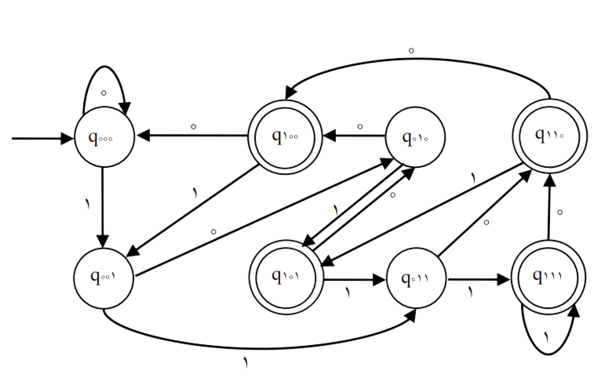

Theory of Computation
An eight-state DFA that accepts binary strings whose third symbol from the right is 1.

How it works
The state stores the latest three symbols. Each input drops the oldest symbol and appends the new one. A string is accepted when the first of those three bits is 1; strings shorter than three bits are rejected.
python Automata.py --check 100 # ACCEPTED python Automata.py --check 1000 # REJECTED
Interactive visualizer
Install Pygame and run Automata.py. Type 0 or 1 to advance, Backspace to undo, R to reset, and Esc to close. The highlighted state and acceptance status update with input.
Validation
Seven tests passed, including all 16 transitions and all 8,191 binary strings through length 12. The Pygame interface has not been executed in the review environment; see the README for this limitation and desktop run instructions.